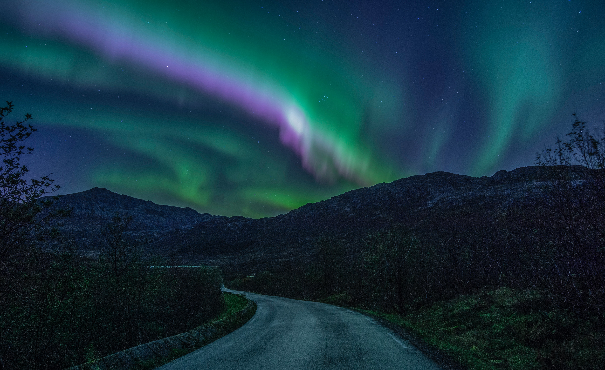
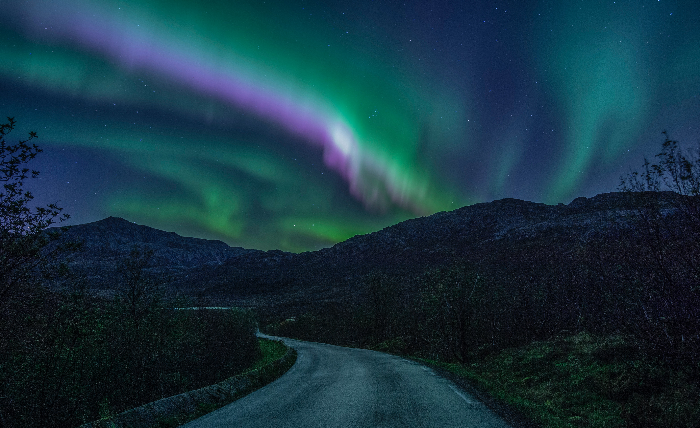

What are the Northern Lights?
An aurora also commonly known as polar lights, northern lights, or southern lights is a natural light display in Earth's sky, predominantly seen in high-latitude regions (around the Arctic and Antarctic). Auroras display dynamic patterns of brilliant lights that appear as curtains, rays, spirals, or dynamic flickers covering the entire sky.
What causes the Northern Lights?
Auroras are the result of disturbances in the magnetosphere caused by the solar wind. Major disturbances result from enhancements in the speed of the solar wind from coronal holes and coronal mass ejections. These disturbances alter the trajectories of charged particles in the magnetospheric plasma. These particles, mainly electrons and protons, precipitate into the upper atmosphere (thermosphere/exosphere). The resulting ionization and excitation of atmospheric constituents emit light of varying colour and complexity. The form of the aurora, occurring within bands around both polar regions, is also dependent on the amount of acceleration imparted to the precipitating particles.
Where and when can the Northern Lights be observed?
The aurora borealis is visible from areas around the Arctic such as Alaska, the Canadian Territories, Iceland, Greenland, Norway, Sweden, Finland, Scotland and Siberia. On rare occasions the aurora borealis can be seen as far south as the Mediterranean and the southern states of the US.
 
